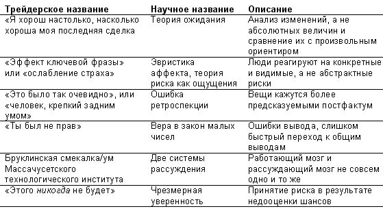

{% include JB/setup %}
{% raw %}
<div>

<span><span id="id16"><div class="title3">
<p class="p">Глава 11</p>
<p class="p">Случайность и наш разум: мы вероятностно слепы</p>
</div><div class="cite">
<p class="p1"><em class="calibre">О том, что трудно думать об отпуске как о линейной комбинации Парижа и Багамских островов. Ниро Тьюлип мог больше никогда не покататься в Альпах на лыжах. Не задавайте бюрократам слишком много вопросов. Мозг с надписью «Сделано в Бруклине». Нам нужен Наполеон. Ученые кланяются королю Швеции. Еще раз о журналистском «шуме». Почему вы уже могли умереть.</em></p>
</div><p class="subtitle">Париж или Багамы?</p><p class="p1">У вас есть два варианта, как провести следующий короткий отпуск в марте. Первый — полететь в Париж, второй — отправиться на острова Карибского моря. Вам все равно, а ваша супруга склоняется то к одному, то к другому. Когда вы думаете об этих возможностях, в вашей голове возникают две четкие различные картинки. На первой вы стоите в музее д’Орсе перед какой-то картиной Камиля Писсарро, где изображено облачное небо — серое зимнее парижское небо. В руках у вас зонтик. На второй картинке вы лежите на полотенце рядом со стопкой книг ваших любимых авторов (Том Клэнси и Аммиан Марцеллин), а подобострастный официант подает вам банановый дайкири. Вы знаете, что эти два состояния взаимно исключаются (вы не можете быть в двух местах одновременно), но и взаимно дополняют друг друга (со 100-процентной вероятностью вы будете в одном из них). Они равновероятны, то есть вы знаете, что попадете в какое-то из них с вероятностью 50 %.</p><p class="p1">Вы испытываете огромное удовольствие, думая об отпуске; он мотивирует вас и делает ваши ежедневные посадки на работу и с работы легче. Но рациональное поведение в условиях неопределенности призывает мысленно представить себя находящимся на 50 % в одном месте отдыха и на 50 % — в другом, в математике это называется «линейной комбинацией» двух состояний. Может ваш мозг с этим справиться? Насколько желательно вам оказаться ногами в волнах Карибского моря, а головой — под парижским дождем? Наш мозг может полноценно контролировать одно и только одно состояние в каждый момент времени — если только лично у вас нет проблем глубоко патологического характера. А теперь попробуйте представить себе комбинацию 85/15. Удалось?</p><p class="p1">Рассмотрим пари, которое вы заключили с коллегой на сумму 1000 долларов, что, по вашему мнению, довольно справедливо. Завтра вечером у вас будет в кармане 0 или 2000 долларов, вероятность каждого исхода 50 %. В чисто математических терминах справедливой стоимостью ставки является линейная комбинация двух состояний, назовем здесь ее «математическим ожиданием», то есть суммой произведений вероятности каждого исхода на его значение (50 % умножить на 0 долларов плюс 50 % умножить на 2000 долларов = 1000 долларов). Вы можете <em class="calibre">представить</em> (то есть визуализировать, а не вычислить арифметически) величину 1000 долларов? Вы можете вообразить одно <em class="calibre">и только одно</em> состояние в каждый момент времени, то есть или 0, или 2000 долларов. Но для нас естественно относиться к пари иррационально, и доминировать будет одно — страх закончить ни с чем или возбуждение по поводу лишней 1000 долларов.</p><p class="subtitle">Некоторые архитектурные соображения</p><p class="p1">Пришло время раскрыть секрет Ниро. В его жизни встречался «черный лебедь». Ниро было тогда тридцать пять. Хотя довоенные здания в Нью-Йорке могут выглядеть хорошо, с обратной стороны их архитектура представляет собой нечто безликое, прямо противоположное фасаду. Окно в смотровом кабинете врача выходило на задний двор одной из улиц Ист-Сайда, и Ниро, даже если проживет еще полстолетия, будет всегда помнить, какой унылый это был двор по сравнению с фасадом дома. Он навсегда запомнил вид уродливого рокового двора через серое оконное стекло и медицинский диплом на стене, который он изучил раз десять, ожидая, пока доктор вернется в комнату (Ниро, подозревавшему неладное, показалось, что его не было целую вечность). Затем были озвучены новости (замогильным голосом): «У меня есть… есть отчет о наличии патологии… это… ну, не так плохо, как прозвучит… это… это рак». Это слово заставило Ниро дернуться, как от электрического разряда, пронзившего его от спины вниз к коленям. Ниро попытался крикнуть: «Что?» — но из его горла не вылетело ни единого звука. Его испугали не столько новости, сколько вид доктора. Новости каким-то образом были восприняты телом раньше, чем разумом. Но в глазах доктора бился слишком большой испуг, и Ниро немедленно заподозрил, что дело обстояло еще хуже, чем ему было сказано (так и было).</p><p class="p1">Ночь он провел в медицинской библиотеке, где сидел, насквозь мокрый после блуждания в течение нескольких часов под дождем, которого не заметил, и вокруг него образовалась лужа (сотрудница библиотеки кричала на Ниро, но он не мог сосредоточиться на ее словах, так что она пожала плечами и ушла прочь); потом он наткнулся на фразу «пятилетний коэффициент выживаемости на уровне 72 %». Это значило, что 72 людям из 100 это удавалось. Чтобы пациент считался выздоровевшим, нужно, чтобы признаки болезни не проявлялись в течение трех-пяти лет (ближе к трем в его возрасте). Тогда он совершенно определенно почувствовал где-то внутри, что сделает это.</p><p class="p1">Здесь читатель может поинтересоваться, в чем математическая разница между шансами умереть в течение следующих пяти лет, равными 28 %, и шансами выжить, равными 72 %. Ясно, что ее нет, но мы не созданы для математики. В мозгу Ниро шанс умереть, равный 28 %, вызывал образ его самого в гробу и тягостных подробностей похорон. Шанс выжить, равный 72 %, окрылял его: он представлял, как после исцеления будет кататься на лыжах в Альпах. Ни разу в течение своего сурового испытания Ниро не думал о себе как о живом на 72 % и мертвом на 28 %.</p><p class="p1">Как Ниро не мог думать в сложной ситуации, так, например, и потребители считают, что обезжиренный на 75 % гамбургер отличается от гамбургера с 25-процентным содержанием жиров. Это же касается и статистической значимости. Даже специалисты склонны слишком быстро прекращать анализ данных, соглашаясь или отказываясь от предложения. Вспомните стоматолога, чье эмоциональное самочувствие зависит от текущей доходности его портфеля. Почему? Потому что, как мы увидим, определенное правилами поведение не нуждается в нюансах. Вы или убьете соседа, или нет. Сентиментальность, проявленная на полпути (ведущая, скажем, к убийству наполовину), или бесполезна, или откровенно опасна, когда вы заняты серьезным делом. Эмоциональный аппарат, толкающий нас на действия, не принимает этих полутонов — они неэффективны для понимания окружающего. Далее мы бегло рассмотрим некоторые проявления такой слепоты с кратким описанием исследований в этой области (только тех, которые связаны с темами книги).</p><p class="subtitle">Остерегайтесь философствующего бюрократа</p><p class="p1">В течение долгого времени, думая о себе, мы пользовались неправильным фабричным описанием человека как продукции. Мы, люди, верили, что наделены прекрасной машиной для мышления и понимания вещей. Однако одним из параметров человека, указанных в таком описании, является незнание его истинных параметров (зачем усложнять?). Проблема мышления в том, что оно приводит к иллюзиям. И еще оно расходует энергию! Кому это надо?</p><p class="p1">Представьте, что вы стоите перед чиновником в глубоко социалистической стране, где уважаемые люди зарабатывают себе на жизнь тем, что являются бюрократами. Вы пришли, чтобы получить его подпись на документах, дающих вам право экспортировать их прекрасные шоколадные конфеты в район Нью-Джерси, где, как вам кажется, местное население оценит их вкус. В чем состоит его функция, как вы думаете? Можете ли вы хотя бы на минуту предположить, что его заботит лежащая в основе экспортной операции общая экономическая теория? Его работа заключается в проверке наличия на ваших документах двенадцати или около того подписей нужных департаментов: «да/нет»; затем он ставит печать, и вы можете идти. Общие соображения об экономическом росте или торговом балансе не имели отношения к его интересам. На самом деле вам повезло, что он не тратит время на размышления о таких вещах: представьте, насколько удлинилась бы процедура, если бы ему пришлось решать уравнения торгового баланса. Он лишь набор инструкций, и на протяжении своей сорока- или сорокапятилетней карьеры будет только штамповать документы, беззлобно грубить посетителям, а затем отправляться домой, пить пиво и смотреть футбол. Если вы подарите ему книгу Пола Кругмана о международных экономических отношениях, он или продаст ее на черном рынке, или отдаст племяннику.</p><p class="p1">На самом деле правила по-своему ценны. Мы выполняем их, не задумываясь, не потому, что они лучшие, а потому, что они полезны и сохраняют время и усилия. Представьте, что человек, увидев тигра, начнет теоретизировать по поводу вида, к которому тот относится, и степени опасности, которую представляет, — его съедят, тем дело и закончится. А другой просто побежит при первой же возможности, не теряя ни мгновения на то, чтобы подумать, и дело закончится тем, что от него отстанет либо тигр, либо его думающий кузен, которого и съедят.</p><p class="empty-line"></p><p class="p1"><strong class="calibre3">Принцип разумной достаточности</strong></p><p class="p1">Определенно, наш мозг не мог бы работать, не имей он таких «коротких путей». Первым человеком, выяснившим это, был Герберт Саймон, интересный персонаж интеллектуальной истории. Он начинал как политолог (но мыслил формализованно, а не так, как литературное сообщество политологов, писавших об Афганистане в журнале <em class="calibre">Foreign Affairs</em>, посвященном международным отношениям); он был пионером в области искусственного интеллекта, преподавал компьютерные науки и психологию, проводил исследования в науке о мышлении, философии и прикладной математике и получил от Банка Швеции премию имени Альфреда Нобеля в области экономики. Его идея состояла вот в чем: если бы нам пришлось оптимизировать каждый шаг в жизни, это стоило бы нам бесконечного количества времени и энергии. Соответственно, существующий где-то в нас процесс аппроксимации должен в какой-то момент останавливаться. Ясно, что эту мысль он вынес из изучения кибернетики — карьеру он сделал в университете Карнеги—Меллона в Питтсбурге, имеющем репутацию признанного центра компьютерных исследований. Он придумал принцип разумной достаточности (по-английски <em class="calibre">satisficing — </em>гибрид слов <em class="calibre">satisfy</em> — удовлетворять и <em class="calibre">suffice —</em> быть достаточным): вы останавливаетесь, когда получаете почти удовлетворяющее вас решение. В противном случае вам потребовалась бы целая вечность, чтобы сделать простейший вывод или выполнить простейшее действие. Потому мы рациональны, но не совсем — «ограниченно рациональны». Саймон верил, что наш мозг является большой оптимизирующей машиной, имеющей встроенные правила, чтобы останавливаться в определенный момент.</p><p class="p1">Возможно, все не совсем так. Это может не быть просто грубой аппроксимацией. Для двух (поначалу) израильских исследователей человеческой природы наше поведение представлялось совершенно отличающимся от оптимизирующей машины, представленной Саймоном. Эти двое сидели и размышляли в Иерусалиме, изучая аспекты собственного мышления, сравнивали их с рациональными моделями и заметили <em class="calibre">качественные</em> различия. Хотя они оба, кажется, делали обычные ошибки мышления, они проводили эмпирические тесты на людях, в основном на студентах, и обнаружили неожиданные свойства связи между мышлением и рациональностью. К этому их открытию мы и переходим.</p><p class="subtitle">Дефектны, а не просто несовершенны</p><p class="p1"><strong class="calibre3">Канеман и Тверски</strong></p><p class="p1">Кто оказал наибольшее влияние на экономическую мысль за последние два столетия? Нет, это не Джон Мейнард Кейнс, не Альфред Маршалл, не Пол Самуэльсон и, уж конечно, не Милтон Фридман. Правильный ответ: два неэкономиста Дэниел Канеман и Эймос Тверски, израильские мыслители, специализировавшиеся на исследованиях областей, в которых человеческие существа не наделены рациональным вероятностным мышлением и оптимальным поведением в условиях неопределенности. Странно, что экономисты долгое время изучали неопределенность, но выяснили немногое — если вообще что-то выяснили, хотя они полагали, что узнали кое-что, чем и были одурачены. Кроме острых умов, таких как Кейнс, Фрэнк Хайнеман Найт и Джордж Леннокс Шекл, экономисты даже и не подозревали, что у них нет никаких ключей к неопределенности — обсуждение рисков их кумирами показывает, что <em class="calibre">они не знают, как много они не знают.</em> С другой стороны, психологи изучали проблему и получили надежные результаты. Заметьте, что, в отличие от экономистов, они проводили эксперименты, настоящие контролируемые эксперименты повторяемой природы, которые хоть завтра можно провести в Улан-Баторе (Монголия), если понадобится. Традиционным экономистам недоступна такая роскошь, поскольку они изучают прошлое и пишут пространные математические комментарии, а затем пререкаются друг с другом по этому поводу.</p><p class="p1">Канеман и Тверски пошли в совершенно противоположном направлении, нежели Саймон, и начали изучать правила поведения людей, которые не делали их рациональными, но и совершенно не походили на «короткие пути». Ученые считали, что эти правила, которые называются эвристиками, не были упрощением рациональных моделей, а отличались от них в методологии и относились к другой категории. Они назвали эти правила «быстрыми и грубыми» эвристиками. Вот грубая сторона: правила обладали побочными эффектами, теми самыми ошибками, большинство из которых мы обсуждали выше (например, неспособность принять такую абстракцию, как риск). Они основали подход в эмпирических исследованиях под названием «методология эвристик и ошибок», в которой попытались каталогизировать их, это впечатляет, учитывая эмпирику и экспериментальный аспект использованных методов.</p><p class="p1">После результатов, полученных Канеманом и Тверски, расцвела целая дисциплина под названием «поведенческая экономика и финансы». Она находится в открытой конфронтации с ортодоксальной, так называемой неоклассической экономикой, которую преподают в бизнес-школах и на экономических факультетах с нормативными терминами «эффективные рынки», «рациональные ожидания» и прочими подобными понятиями. На этой развилке стоит остановиться и обсудить разницу между нормативными и позитивными науками. Нормативная наука (очевидное, внутренне противоречивое понятие) предлагает учение на основе инструкций; она изучает то, какими вещам <em class="calibre">следует </em>быть. Некоторые экономисты, например, придерживающиеся религии эффективных рынков, верят, что наши исследования должны базироваться на гипотезе о том, что люди рациональны и действуют рационально, поскольку это лучшее, что они могут делать (это «оптимально» с математической точки зрения). Позитивная наука отталкивается от противоположного, она основана на наблюдениях за реальным поведением людей. Хотя экономисты и завидуют физикам, физика внутренне позитивная наука, в то время как экономика, особенно микроэкономика и финансовая экономика, преобладающе нормативна. Нормативная экономика похожа на религию, лишенную эстетики.</p><p class="p1">Заметьте, что экспериментальный аспект исследований означает то, что Дэниел Канеман и Вернон Смит, экономист-экспериментатор с прической «конский хвост», были первыми истинными учеными, склонившимися перед королем Швеции и получившими премию по экономике; это повышает доверие к Нобелевскому комитету, в особенности если вы, как и многие другие, относитесь к Дэниелу Канеману намного серьезнее, нежели серьезно выглядящие (и очень по-человечески склонные ошибаться) шведы. Есть еще одна черта научной четкости этих исследований: посвященные им работы чрезвычайно легко читать человеку, не занимающемуся психологией, в отличие от статей по традиционной экономике и финансам, которые с трудом понимают даже специалисты (поскольку их текст перегружен терминами и насыщен математическими выкладками, чтобы создать иллюзию научности). Мотивированный читатель может не потерять нить на протяжении четырех томов, которые содержат собрание работ, посвященных основным эвристикам и ошибкам.</p><p class="p1">Экономисты тогда были не очень заинтересованы в выслушивании этих историй об иррациональности: <em class="calibre">Homo economicus</em> (человек экономический) — это, как было сказано, нормативное понятие. Хотя они легко могли согласиться с аргументом Саймона о том, что наша рациональность несовершенна и что жизнь полна аппроксимаций, особенно когда на кону что-то незначительное, экономисты не пожелали поверить в то, что люди скорее дефектны, нежели просто несовершенны. Но это так. Канеман и Тверски показали, что все эти ошибки не исчезают, даже когда людей стимулируют на борьбу с ними, то есть ошибки не обязательно означают экономию затрат. Они относятся к другой форме мышления, где слаб вероятностный аспект.</p><p class="subtitle">Где же Наполеон, когда он нам так нужен?</p><p class="p1">Если ваш разум управляется последовательностью несвязанных между собой правил, они не обязательно должны быть согласованными друг с другом, и если они могут работать <em class="calibre">локально,</em> им не нужно делать это <em class="calibre">глобально.</em> Представьте, что они хранятся в виде сборника инструкций. Ваша реакция будет зависеть от того, на какой странице вы откроете книгу в произвольный момент времени. Я иллюстрирую это еще одним социалистическим примером.</p><p class="p1">После коллапса Советского Союза западные бизнесмены, работавшие с тем, что стало Россией, обнаружили тревожный (или забавный) факт относительно правовой системы: в ней были конфликтующие и противоречащие друг другу законы. Все зависело оттого, в какой из них вы смотрели. Я не знаю, сделали ли это русские из шалости (в конце концов, они долго жили под гнетом и без юмора), но путаница приводила к ситуациям, когда людям приходилось нарушать один закон, чтобы выполнить другой. Должен сказать, что общаться с юристами довольно скучно, а общаться со скучными юристами, говорящими на ломаном английском с сильным акцентом и водочным перегаром, довольно утомительно, так что вы сдаетесь. Такая правовая система в виде спагетти стала результатом создания правил по частям: вы добавляете закон здесь и там, и ситуация становится слишком сложной, так как нет центрального элемента, к которому можно в любой момент обратиться, чтобы убедиться во взаимной совместимости всех остальных частей. Наполеон столкнулся с подобной ситуацией во Франции и исправил ее, создав упорядоченный кодекс законов, в основе которого был диктат полной логической совместимости. Проблема с нами, людьми, не столько в отсутствии Наполеона, который пока не появился и не взорвал старую структуру, чтобы провести реорганизацию нашего разума как большой центральной программы; эта проблема заключается в том, что разум гораздо сложнее, нежели простая система законов, и требования к его эффективности намного выше.</p><p class="p1">Представьте, что ваш мозг по-разному реагирует на одну и ту же ситуацию в зависимости от того, на какой странице вы открыли книгу. Отсутствие центральной вычислительной системы приводит к тому, что мы принимаем решения, которые могут конфликтовать друг с другом. Вы можете предпочитать яблоки апельсинам, апельсины грушам, а груши яблокам — в зависимости от того, какой выбор у вас есть. Причина таких ошибок состоит в том, что ваш разум не может удерживать и использовать сразу все, что вы знаете. Одним из главных аспектов эвристики является то, что она слепа к аргументам.</p><p class="empty-line"></p><p class="p1"><strong class="calibre3">«Я хорош настолько, насколько хороша моя последняя сделка» и другие эвристики</strong></p><p class="p1">В литературе существуют целые каталоги таких эвристик (многие из них перекрывают друг друга); цель нашего обсуждения дать интуитивное понимание того, что стоит за ними, нежели перечислить их. В течение долгого времени мы, трейдеры, полностью игнорировали исследования человеческого поведения и, сталкиваясь с ситуациями, в которых присутствовали странные закономерности, разрывались между простыми вероятностными рассуждениями и человеческим восприятием вещей. Мы давали им названия вроде «эффект “я хорош настолько, насколько хороша моя последняя сделка”», «эффект ключевой фразы», «эвристика человека, крепкого задним умом» и «эффект “это стало очевидным постфактум”». Для трейдерской гордости было одновременно и приятно, и обидно обнаружить, что данные явления уже содержатся в литературе об эвристиках под названиями «якорение», «эвристика аффекта» и «ошибка ретроспекции» (это дает нам чувство, что трейдинг — настоящее, экспериментальное научное исследование). Связь между двумя описанными мирами показана в табл. 11.1.</p><p class="p1"><sup class="a"><strong class="calibre1">Табл. 11.1.</strong> Подходы трейдеров и ученых</sup></p><div class="image">

</div><p class="p1">Начну с эвристики «я хорош настолько, насколько хороша моя последняя сделка» (или ошибки «потери перспективы»): счетчик обнуляется, и вы начинаете новый день или месяц со стартовой отметки, вне зависимости от того, кто ее провел — ваш бухгалтер или ваш разум. Это наиболее значительное искажение, у которого больше всего последствий. Чтобы суметь понять вещи в общем контексте в произвольный момент, у вас нет доступа ко всему, что вы знаете, поэтому в каждый момент времени вы вспоминаете требуемые знания «по частям», что помещает эти запрошенные «фрагменты» знаний в их местный контекст. Это означает, что у вас появляется произвольный ориентир, и вы реагируете на изменения с учетом такого ориентира, забывая, что воспринимаете их в определенной перспективе и с учетом местного контекста, то есть что это не абсолютные величины.</p><p class="p1">Есть хорошо известная трейдерская максима: «Жизнь — это приращение». Представьте, что вы инвестор и изучаете доходность своего портфеля через некоторые определенные интервалы, как стоматолог из третьей главы. На что вы смотрите: на доходность по итогам месяца, дня, всей жизни или последнего часа? У вас может быть хороший месяц и плохой день. Какой период должен доминировать?</p><p class="p1">Когда вы играете в азартную игру, вы говорите: «Мой чистый капитал в конце игры составит 99 000 или 101 500 долларов» или «Я проиграю 1000 или выиграю 1500 долларов»? Ваше отношение к риску и вознаграждению в азартной игре будет отличаться в зависимости от того, оцениваете ли вы капитал или изменения в нем. Но на самом деле в реальной жизни вы попадете в ситуации, где будете видеть только <em class="calibre">изменения.</em> Тот факт, что убытки задевают сильнее, чем прибыли, и <em class="calibre">иначе</em>, делает вашу накопленную доходность, то есть ваш суммарный капитал, менее важными, чем последние изменения в них.</p><p class="p1">Эта зависимость от локального, а не глобального статуса (помноженная на более сильный эффект убытков, нежели прибылей) влияет на ваше восприятие благополучия. Скажем, вам неожиданно посчастливилось заработать 1 млн долларов. В следующий месяц вы теряете 300 тыс. долларов. Вы корректируете величину своего состояния (если только не очень бедны), но эта потеря задевает вас эмоционально. Этого не случилось бы, если бы вы сразу получили чистую сумму в размере 700 тыс. долларов или, что лучше, две суммы по 150 тыс. долларов каждая. Кроме того, вашему мозгу легче обнаружить разницу, чем абсолютные значения, вследствие этого богатство или бедность (над минимальным уровнем) будет оцениваться в сравнении с кем-то еще (вспомните Марка и Джанет). Теперь, когда нечто <em class="calibre">сравнивается</em> с чем-то еще, этим «чем-то еще» можно манипулировать. Психологи называют «якорением» этот эффект сравнения с определенным ориентиром. Если мы доведем его до логического предела, то поймем, что из-за такого «обнуления» богатство само по себе на самом деле не может сделать человека счастливым (конечно, выше определенного уровня выживания); а вот положительные изменения богатства — могут, особенно если они проявляются в виде «стабильных» приростов. Мы поговорим об этом еще при обсуждении опционной слепоты.</p><p class="p1">Другой аспект «якорения». Если предположить, что вы можете использовать два разных якоря в одной и той же ситуации, то ваши действия будут зависеть от всякой мелочи. Когда людей просят оценить число, они исходят из того числа, которое держат в голове, или отталкиваются от только что услышанного, так что «большое» или «малое» — понятия относительные. Канеман и Тверски просили участников эксперимента оценить долю африканских стран в ООН после того, как те сознательно вытаскивали случайное число от 0 до 100 (они знали, что число случайное). Люди делали предположение, связанное с этим числом, они использовали его в качестве якоря: те, кому попадалось большое случайное число, предполагали бóльшую долю, а те, кому низкое, — меньшую. Этим утром я провел шуточное эмпирическое исследование, спросив консьержа в отеле, сколько времени занимает дорога в аэропорт. «40 минут?» — спросил я. «Примерно 35», — ответил он. Затем я спросил даму за стойкой регистрации, доеду ли я за 20 минут. «Нет, примерно за 25», — ответила она. Я засек время: 31 минута.</p><p class="p1">Это якорение к числам — причина того, что люди реагируют не на общую величину своего накопленного богатства, а на разницу с теми цифрами, которые выступают в качестве текущего якоря. Здесь налицо серьезный конфликт с экономической теорией, ведь, по мнению экономистов, человек с миллионом долларов на банковском счете должен быть счастливее, чем если бы у него было полмиллиона. Но мы видели Джона, оставшегося с 1 млн после того, как у него их было 10; он был счастливее в тот момент, когда имея 500 тыс. долларов (начав с нуля), нежели когда мы оставили его в главе 1. Вспомните также стоматолога, чьи эмоции зависели от того, как часто он проверял свой портфель.</p><p class="empty-line"></p><p class="p1"><strong class="calibre3">Диплом по управлению судьбой</strong></p><p class="p1">Было время, когда я ходил днем в спортивный клуб и болтал там с интересным человеком из Восточной Европы с двумя докторскими степенями — одной по физике (там не меньше статистики), другой — по финансам. Он работал в инвестиционном банке и был одержим событийными аспектами рынков. Однажды он настойчиво поинтересовался у меня, что я думаю о поведении рынка в этот день. Ясно, что я дал ему ни к чему не обязывающий ответ вроде «Я не знаю, может, пойдет вниз», вполне возможно, я дал бы ему противоположный ответ, спроси он меня часом раньше. На следующий день он очень встревожился, увидев меня. Он снова и снова возвращался к обсуждению доверия ко мне, интересуясь, как я мог так ошибиться в своих «предсказаниях», ведь рынок значительно вырос. Этот человек сделал выводы о моих способностях предсказывать и доверии ко мне по одному наблюдению! Теперь, когда я подходил к телефону, звонил ему и говорил измененным голосом: «Алло, это докторр Талебски из академии Лодзя, и у меня интеррресная пррроблема», — он смеялся надо мной: «Докторр Талевски, вы получили диплом по управлению судьбой?» Почему так?</p><p class="p1">Ясно, что здесь есть две проблемы. Первая — этот «квант», делая выводы, использовал не свой мозг статистика, а какой-то другой. Вторая — он сделал ошибку, переоценив важность малой выборки (в данном случае всего одно наблюдение, худшая из возможных ошибок вывода, которую может совершить человек). Математики склонны ошибаться самым вопиющим образом, когда дело касается не их теоретической области. Когда Тверски и Канеман тестировали математических психологов, часть которых являлись авторами учебников по статистике, они были озадачены их ошибками. «Респонденты придают слишком большое значение результатам малых выборок, их статистические суждения показывают слабую зависимость от размера выборки». Сбивает с толку то, что они не просто <em class="calibre">должны</em> были это знать, «они <em class="calibre">знали</em>». И все же…</p><p class="p1">Далее я перечислю еще несколько эвристик. 1. Эвристика <em class="calibre">доступности,</em> которую мы видели в главе 3, когда землетрясение в Калифорнии кажется более вероятным, нежели катастрофа в любом месте страны, или смерть в результате теракта — более «вероятной», нежели смерть по любой причине (включая терроризм). Это сочетается с практикой оценки частоты события в зависимости от того, насколько легко приходят в голову случаи, когда такое событие происходило. 2. Эвристика <em class="calibre">репрезентативности —</em> определение вероятности, что человек принадлежит к какой-то определенной социальной группе, путем оценки того, насколько похожи его характеристики на черты «типичного» представителя группы. Студентку философского факультета с феминистскими взглядами скорее примут за кассира банка с феминистскими взглядами, нежели просто за кассира банка. Эта ситуация известна как «проблема Линды» (феминистку звали Линда), ученые пролили много чернил по ее поводу (некоторые из них начали обсуждение рациональности, пребывая в уверенности, что Канеман и Тверски предъявляют нам, людям, слишком завышенные нормативные требования). 3. Эвристика <em class="calibre">«симуляции»</em> — когда испытываешь облегчение, отменяя мысленно какое-либо случившееся событие и проигрывая в уме альтернативный вариант сценария. Это связано с мышлением, противоречащим фактам: представьте, что было бы, если бы вы не опоздали на поезд (или как богаты вы были бы сегодня, продав все свои акции в верхней точке «пузыря» NASDAQ). 4. Мы обсуждали в главе 3 эвристику аффекта — эмоции, возникающие в результате события, зависят от вероятности, приписываемой ему вашим умом.</p><p class="empty-line"></p><p class="p1"><strong class="calibre3">Две системы рассуждения</strong></p><p class="p1">Недавние исследования уточнили эту область: у нас есть два возможных способа делать умозаключения, частью одного являются эвристики, частью другого — рациональность. Вспомните моего коллегу, который как бы использовал в учебной аудитории один мозг, а в реальной жизни — другой. Не удивительно ли, почему человек, которого вы считаете отлично знающим физику, не может применить на практике простейшие физические законы, чтобы хорошо водить автомобиль? Исследователи делят активность нашего мозга на две полярные части, которые называют «Система 1» и «Система 2».</p><p class="p1"><em class="calibre">Система 1</em> — это не требующий усилий, автоматический, ассоциативный, быстрый параллельный процесс, он независим (то есть мы не знаем о том, что используем его), эмоционален, конкретен, определен, социален и персонализирован.</p><p class="p1"><em class="calibre">Система 2</em> — это требующий усилий, контролируемый, дедуктивный, медленный, последовательный, сознаваемый, нейтральный, абстрактный, множественный, асоциальный и деперсонализированный процесс.</p><p class="p1">Я всегда считал, что профессиональные трейдеры, специализирующиеся на опционах, и маркетмейкеры в результате постоянной тренировки в ходе своих игр с вероятностью создают встроенную вероятностную машину, которая гораздо лучше развита, чем у других людей — даже специалистов в теории вероятностей. Я нашел подтверждение этому, когда узнал, что исследователи методологии эвристик и ошибок верят в то, что на Систему 1 могут оказывать влияние опыт и некоторые элементы Системы 2. Например, обучаясь игре в шахматы, вы используете Систему 2. Потом вещи становятся понятными интуитивно, и вы можете определить относительную силу соперника, бросив мимолетный взгляд на доску.</p><p class="p1">Далее я представлю вам точку зрения эволюционной психологии.</p><p class="subtitle">Почему мы не женимся после первого свидания</p><p class="p1">В рамках другой ветви исследований под названием «эволюционная психология» разработан кардинально отличающийся подход к той же проблеме. Он развивается параллельно, приводя к резким, но не слишком беспокойным научным спорам. Эволюционные психологи согласны со школой Канемана—Тверски в том, что люди испытывают трудности со стандартными рассуждениями о вероятности. Однако они считают, что причина этих трудностей кроется в особенностях восприятия вещей в современной среде. В их понимании мы «оптимизированы» для вероятностного мышления, но в среде, отличной от той, которая превалирует сегодня. Этот взгляд обобщен в высказывании ученого-интеллектуала Стивена Пинкера, официального представителя указанной школы: «Наш мозг создан, чтобы приспосабливаться, а не искать истину». Они согласны с тем, что человеческий мозг не очень подходит для понимания вещей, но думают, что он не подвержен ошибкам или если ошибается, то только потому, что мы используем его в неестественной для него среде.</p><p class="p1">Странно, что исследовательская школа Канемана—Тверски не встретила какого-либо значимого сопротивления экономистов (общая значимость традиционных экономистов всегда была столь низка, что почти никто ни в науке, ни в жизни не обращает на них внимания). Вместо этого возражения последовали со стороны социобиологов, и при этом они опирались на свою веру в использование эволюционной теории в качестве станового хребта нашего понимания человеческой природы. Хотя разгорелись жестокие научные споры, я должен сказать, что по значительной части вопросов, которым посвящена эта книга, согласие было достигнуто: 1) мы не <em class="calibre">думаем,</em> когда совершаем выбор, мы используем эвристики; 2) в современном мире мы совершаем серьезные вероятностные ошибки — <em class="calibre">какой бы ни была их истинная природа.</em> Заметьте, что и сама новая экономика расколота: наряду с научной областью, возникшей на базе методологии Канемана и Тверски (поведенческая экономика), есть и другая область, которая берет начало в эволюционной психологии, беря экономику пещерного человека в качестве отправной точки, и в которой работают такие исследователи, как экономист-биолог Терри Бернхем, соавтор очень интересной книги «Подлые гены».</p><p class="empty-line"></p><p class="p1"><strong class="calibre3">Наша естественная среда обитания</strong></p><p class="p1">Не буду очень глубоко погружаться в любительское обсуждение эволюционной теории, чтобы анализировать ее основы (несмотря на большое количество времени, проведенного в библиотеках, я чувствую себя всего лишь любителем в этом вопросе). Ясно, что среда, для которой были предназначены дарованные нам свойства, не та, что превалирует сейчас. Слишком многим из моих коллег я не говорил, что, принимая решения, они демонстрируют хорошо сохранившиеся привычки пещерных людей, но когда на рынке происходят резкие изменения, я испытываю такой же выброс адреналина, как если бы вдруг увидел леопарда, подкрадывающегося к моему рабочему столу. Некоторые из моих коллег, швыряющие на пол телефонные трубки в случае крупных проигрышей, может быть, еще ближе в своих психологических проявлениях к нашим общим предкам.</p><p class="p1">Для тех, кто часто обращается к классической древнегреческой и древнеримской литературе, может прозвучать банальностью, что мы не перестаем удивляться, замечая похожие на наши чувства и переживания у тех, кто удален от нас на пару тысяч лет. Когда я ребенком посещал музеи, меня всегда поражало, что древнегреческие статуи изображают людей, имеющих те же черты, что и у меня (только более гармоничные и аристократичные). Я был так неправ, думая, что 2200 лет — это очень много. Пруст писал об удивлении, которое люди испытывают, сталкиваясь с эмоциями героев Гомера, похожими на те, что мы переживаем сегодня. По генетическим стандартам эти герои Гомера, жившие тридцать веков назад, были, по всей вероятности, точно такими же, как тот невысокий крепыш, которого вы видите на автостоянке с полными пакетами продуктов из супермаркета. Более того, фактически мы полностью идентичны человеку, который восемьдесят веков назад стал считаться «цивилизованным» на узкой полоске земли, протянувшейся от юго-восточной Сирии до юго-западной Месопотамии.</p><p class="p1">Что такое наша естественная среда обитания? Под ней я понимаю среду, в которой мы лучше всего размножались и в которой прожило наибольшее количество поколений. У антропологов есть единство во мнениях поэтому поводу: мы выделились как отдельный вид 130 тыс. лет назад и большую часть этого времени провели в африканской саванне. Но нам не нужно так далеко углубляться в историю, чтобы понять суть. Представьте себе жизнь в древнем поселении Средний Город где-то в том регионе Ближнего Востока, что называется Плодородный полумесяц (Египет, Финикия и Месопотамия), всего лишь 3 тыс. лет назад — практически современность с генетической точки зрения. Информация ограничена физическими средствами ее распространения; если нет возможности добраться быстро, то и информация из удаленных мест будет поступать ограниченными порциями. Путешествие — беспокойное и сложное дело, полное различных физических опасностей; вы будете находиться в узкой области, в которой родились, пока голод или вторжение какого-либо нецивилизованного племени не вынудит вас и ваших родственников покинуть привычное место. Количество людей, которых вы узнаете на протяжении жизни, будет невелико. Если совершается преступление, собрать свидетельства вины будет легко, так как круг возможных подозреваемых узок. Если вас несправедливо обвинят в чем-то, вы можете защитить себя простыми аргументами, заявив всего лишь что-то вроде «я там не был, потому что молился в храме Ваала на закате и меня видел верховный жрец» и добавив, что, скорее всего, виноват Обедшемеш, сын Сахара, потому что он больше должен был выиграть в результате преступления. Ваша жизнь была бы проста, поскольку ваше пространство <em class="calibre">вероятностей</em> было бы узким.</p><p class="p1">Настоящая проблема была в том, что в естественной среде обитания, как я сказал, мало информации. Эффективного вычисления шансов до недавнего времени вообще не требовалось. Это также объясняет, почему нам пришлось ждать появления литературы об азартных играх, чтобы увидеть рост математического вероятностного аппарата. Существует популярная версия, что религиозный фон первого и второго тысячелетий блокировал развитие средств, которые могли навести на мысль об отсутствии детерминизма, и стал причиной задержки в исследовании вероятностей. Идея чрезвычайно сомнительная: мы не считали вероятности просто потому, что не <em class="calibre">осмеливались </em>на это? Конечно, причина скорее в том, что мы не <em class="calibre">нуждались</em> в этом. В основном проблема связана с тем, что мы выпали из привычной среды быстрее, намного быстрее, чем изменились наши гены. Хуже того — наши гены вообще не изменились.</p><p class="empty-line"></p><p class="p1"><strong class="calibre3">Быстрые и экономные</strong></p><p class="p1">Эволюционные теоретики согласны, что работа мозга зависит от того, как представлен объект, и от его окружения, и одно может противоречить другому. Мы раскрываем обман не той частью мозга, которая отвечает за решение логических проблем. Люди делают несогласованные выборы потому, что работа мозга организована в форме решения небольших отдельных задач. Эвристики, о которых мы говорили как о «быстрых и грубых» с точки зрения психологов, являются «быстрыми и экономными» для эволюционных психологов. Не только они, но и некоторые философы, например когнитивист Горд Гигеренцер, кажутся одержимыми точкой зрения, противоположной позиции Канемана и Тверски. Его собственные работы и труды его единомышленников по группе ABC (Adaptive Behavior and Cognition — «Адаптивное поведение и познание») доказывают, что мы рациональны и что эволюция порождает форму рациональности, которую он называет «экологической рациональностью». Они верят, что мы жестко связаны с <em class="calibre">оптимизирующим вероятностным</em> поведенном не только в ситуациях вроде выбора партнера (со сколькими людьми противоположного пола вам нужно встретиться, чтобы принять решение?) или блюда, но также и при отборе акций и что мы сделаем правильный выбор, если акции представлены нам корректным образом.</p><p class="p1">Фактически Гигеренцер соглашается, что мы не понимаем вероятность (слишком абстрактна), скорее реагируем на частоту (менее абстрактна): в соответствии с его точкой зрения некоторые проблемы, при решении которых мы обычно совершаем ошибки, исчезают, если сформулировать их в терминах процентных долей.</p><p class="p1">Эти ученые считают, что, хотя нам может нравиться думать о нашем мозге как о центральной вычислительной системе со свойствами, упорядоченными сверху вниз, более подходящей была бы аналогия со складным ножом с многими лезвиями (с его набором небольших специальных приспособлений). Почему? Система взглядов психологов строится вокруг различий между адаптацией, специфической для предметной области, и адаптацией, независимой от предметной области. Адаптация, специфическая для предметной области, — это нечто, предназначенное для решения очень узких задач (в отличие от адаптации, независимой от предметной области, когда решаются глобальные задачи). Хотя это легко понять и принять в отношении биологической адаптации (шея жирафа помогает ему доставать пищу, а защитная окраска животных маскирует их), люди испытывают трудности с осознанием того, что то же самое применимо и к нашему разуму.</p><p class="p1">Наш мозг функционирует «модульно». Интересный аспект модульности состоит в том, что мы можем использовать различные модули для разных случаев одной <em class="calibre">и той же</em> проблемы (это обсуждается в примечаниях к данному разделу). Одним из атрибутов модуля является его «инкапсуляция», то есть мы не можем взаимодействовать с его функциональным наполнением, поскольку не знаем о том, что используем его. Наиболее замечательный модуль используется, когда мы пытаемся обнаружить обман. Тест, выраженный в чисто логической форме (следовательно, с предельной ясностью), решают только 15 % людей из общего количества исследуемых. А когда тот же тест представляет собой обман, который нужно раскрыть, с ним справляются почти все.</p><p class="empty-line"></p><p class="p1"><strong class="calibre3">И нейробиологи тоже</strong></p><p class="p1">У нейробиологов есть свое мнение по этому вопросу. Они считают, что (грубо говоря) у нас есть три мозга: один очень старый — это мозг рептилий, обеспечивающий сердцебиение и общий для всех животных; лимбический центр эмоций в мозгу, общий для всех млекопитающих; и новая кора головного мозга (неокортекс), или когнитивный мозг, который присущ только приматам и людям (заметьте, что даже у институциональных инвесторов есть, оказывается, неокортекс). Похоже, эта теория триединого мозга задает рамки для анализа его функций, хотя она и выглядит некоторым чрезмерным упрощением (особенно когда о ней говорят журналисты).</p><p class="p1">Несмотря на то что очень трудно точно выяснить, какая из частей мозга за что отвечает, ученые, изучающие его деятельность, строят карты областей мозга, используя, скажем, пациентов, мозг которых поврежден в каком-либо одном определенном месте (например, опухолью или местной травмой), и делают выводы путем исключения функции, выполняемой этой частью организма. Другим методом является составление образа мозга и электрическое стимулирование определенных областей. Многие исследователи из других отраслей науки, например философ и когнитивист Джерри Фодор (ставший пионером изучения модульности), остаются скептиками по поводу качества знаний, которые мы можем получить, изучая физические свойства мозга, считая важными сложные взаимодействия отдельных частей (с соответствующими нелинейностями). Британский математик и когнитивист Дэвид Марр, ставший первым в области распознавания объектов, удачно заметил как-то, что узнать, как летает птица, можно, изучая не перья, а аэродинамику. Я представлю тезисы двух работ, ставших переломными, — это увлекательные книги нейробиологов Антониу Дамазиу <em class="calibre">Decarte's Error</em> («Ошибка Декарта») и Джозефа Леду <em class="calibre">Emotional Brain</em> («Эмоциональный мозг»).</p><p class="p1">В книге «Ошибка Декарта» содержится очень простой тезис: вы проводите хирургическое удаление части головного мозга (скажем, опухоли и тканей вокруг нее) с единственным результатом в виде неспособности выражать эмоции, и ничего больше (IQ и все остальные способности остаются прежними). То, что вы сделали, является контролируемым экспериментом по отделению интеллекта от эмоций. Теперь у вас есть чисто рациональное человеческое существо, не обремененное чувствами и эмоциями. Давайте посмотрим на него: Дамазиу сообщает, что абсолютно неэмоциональный человек не в состоянии принять простейшее решение. Он не может встать утром с постели и разрывается весь день, бесплодно взвешивая каждый свой шаг. Потрясающе! Это означает, что принять решение без эмоций невозможно — явное противоречие с общепринятым мнением. А теперь и математика дает такой же ответ: если бы приходилось выполнять задачу оптимизации с большим количеством переменных, даже с таким большим мозгом, как человеческий, решение простейшей задачи заняло бы очень много времени. Поэтому нам нужен «короткий путь»; эмоции не позволяют нам терять время. Не напоминает ли вам это идеи Герберта Саймона? Кажется, что эмоции делают всю работу. Психологи называют их смазкой мышления.</p><p class="p1">Теория Джозефа Леду о роли эмоций в поведении человека впечатляет еще больше: эмоции влияют на мышление. Он выяснил, что большинство связей, направленных от эмоциональных систем к когнитивным, сильнее идущих в обратную сторону. Это выражается в том, что мы вначале чувствуем эмоции (лимбический мозг), а затем находим объяснения (неокортекс). Как мы видели в результате открытия Клапареда, большая часть мнений и оценок при размышлениях о риске могут оказаться простым результатом эмоций.</p><p class="empty-line"></p><p class="p1"><strong class="calibre3">Кафка в зале суда</strong></p><p class="p1">Судебный процесс над О. Джеем Симпсоном является примером того, что наше современное общество управляется вероятностью (в результате информационного взрыва), а важнейшие решения принимаются без малейшего внимания к ее основным законам. Мы способны отправить космический корабль на Марс, но не можем сделать так, чтобы уголовное судопроизводство руководствовалось базовыми законами вероятности, хотя свидетельские показания имеют явный вероятностный характер. Я помню, как покупал книгу о вероятности, в которой выкристаллизовано крайне сложное количественное знание в этой области, в одном из магазинов книжной сети Borders недалеко от суда Лос-Анджелеса, где проходил «процесс века». Как мог возникнуть такой разрыв между авторами книг и судьями и членами жюри присяжных, находившимися в нескольких милях от магазина?</p></span></span>
</div>

{% endraw %}

